TECH RWT Discovery: Science और Technology आसान हिंदी में
TECH RWT Discovery पर विज्ञान और तकनीक की खबरें और गहरी पड़तालें आसान हिंदी में मिलती हैं। हर लेख के अंत में स्रोत दिए जाते हैं और कठिन शब्द सरल भाषा में समझाए जाते हैं। ताज़ा लेख नीचे देखिए, या सीधे किसी विषय पर जाइए: Science, Space & ISRO, Technology & Future Tech, Environment और Innovation। पूरी सूची के लिए सभी लेख देखिए।

नवीनतम प्रकाशन (Latest Articles)

क्या Mammogram का Overdiagnosis वाला डर बढ़ाकर बताया गया?
पहले कुछ अध्ययनों में 30-50% breast cancer को overdiagnosis बताया गया था। JNCI के नए विश्लेषण के अनुसार यह 5% से कम हो सकता है। जानिए तरीका, सीमाएं और भारत का मतलब।
पूरा लेख पढ़ें →
AI आवाज़ से Italy के बैंक को €95 मिलियन का चूना, पर आधा लौटा
Reuters के सूत्रों के अनुसार AI से नकली आवाज़ बनाकर Italy के Fideuram से €95 मिलियन ठगे गए। आधा पैसा लौटा, भारत के लिए SEBI की चेतावनी भी जुड़ी है।
पूरा लेख पढ़ें →
₹450 करोड़ जुटे, पर IIT Madras के फंड का असली इम्तिहान बाकी
IIT Madras और Unicorn India Ventures के IITM Unicorn Frontier Fund ने ₹450 करोड़ का पहला क्लोज़ किया, पर सामान्य VC और इस patient-capital मॉडल में बड़ा फर्क है।
पूरा लेख पढ़ें →
पुंचक जया: 95% बर्फ गायब, 1-2 साल में आखिरी हिस्सा भी खत्म
इंडोनेशिया के पापुआ में भूमध्य रेखा के पास मौजूद आखिरी उष्णकटिबंधीय बर्फ अगले एक-दो साल में गायब हो सकती है। जानें यह बर्फ अब तक कैसे टिकी रही, क्यों पिघली, और भारत के लिए इसका क्या मतलब है।
पूरा लेख पढ़ें →
Krasheninnikov ज्वालामुखी: NISAR ने कैद की 500 साल बाद जागने की वीडियो
भारत-अमेरिका के साझा NISAR मिशन ने रूस के 500 साल से सोए Krasheninnikov ज्वालामुखी के जागने की पूरी टाइम-लैप्स वीडियो बनाई है। जानिए रडार तकनीक ने यह कैसे मुमकिन किया।
पूरा लेख पढ़ें →
54 Qubits से बना पहला Universal क्वांटम गेट, पर Error-Correction बाकी
Quantinuum के H2 प्रोसेसर पर 54 qubits से non-Abelian anyons बनाकर वैज्ञानिकों ने पहली बार पूरा यूनिवर्सल क्वांटम गेट सेट दिखाया। जानिए खोज क्यों अहम है और भारत के Quantum Mission को क्या मिलेगा।
पूरा लेख पढ़ें →
14 अरब डॉलर का टाटा चिप प्रोजेक्ट: बोर्डरूम जंग के बीच क्या हाल?
Tata Sons में चेयरमैन को लेकर बोर्डरूम विवाद के बीच, सरकार ने टाटा से 14 अरब डॉलर के Dholera चिप फैब पर पुष्टि ली है। जानिए प्रोजेक्ट की असली स्थिति और भारत के लिए मायने।
पूरा लेख पढ़ें →
Artemis Accords: 75वां देश जुड़ा, ILRS से यह कितना अलग है
24 सितंबर 2026 को कोत दिव्वार Artemis Accords का 75वां सदस्य बना। जानिए यह चीन-रूस के ILRS प्रोग्राम से कितना अलग है, और भारत व पाकिस्तान ने किस गुट को चुना।
पूरा लेख पढ़ें →
बिना लाइसेंस वाले E-Scooter अब कितने तगड़े हो सकते हैं?
MoRTH ने बिना लाइसेंस-रजिस्ट्रेशन वाले low-speed EV की मोटर पावर सीमा 250W से 600W करने और वजन सीमा हटाने का मसौदा जारी किया है। जानिए यह बदलाव कैसे काम करेगा और Yulu-BGauss में असहमति क्यों है।
पूरा लेख पढ़ें →
हिंद-प्रशांत महासागर का 400 साल पुराना नाता टूटा, वजह इंसान
WHOI की नई स्टडी के मुताबिक हिंद और प्रशांत महासागर 400 साल तक जुड़े रहने के बाद अब अलग व्यवहार कर रहे हैं, इस बार वजह ज्वालामुखी नहीं इंसानी उत्सर्जन है। भारत के मानसून के लिए इसका मतलब जानें।
पूरा लेख पढ़ें →
LHC के 28 मैग्नेट हटने शुरू, भारत का नाता 1996 से
CERN ने अपने LHC के 28 सबसे अहम मैग्नेट हटाना शुरू कर दिया है। जानिए HiLumi LHC अपग्रेड में क्या बदलेगा, और 1996 से चला आ रहा भारत का इस मशीन से नाता आज कहां खड़ा है।
पूरा लेख पढ़ें →
Kotak BizLabs के दूसरे Cohort से निकलीं 6 भारतीय Startups
Kotak BizLabs और FITT-IIT Delhi के accelerator से निकलीं 6 भारतीय स्टार्टअप्स की कहानियां, रेलवे सुरक्षा से लेकर रक्षा तकनीक और बिना पानी की रंगाई तक।
पूरा लेख पढ़ें →
क्या यह एलियंस का सिग्नल है? पहली बार Exoplanet से Radio Signal मिला
MeerKAT टेलीस्कोप ने पहली बार सीधे किसी एक्सोप्लैनेट Beta Pictoris b से रेडियो सिग्नल पकड़े हैं। यह एलियन का संदेश नहीं, बल्कि ऑरोरा जैसी प्राकृतिक घटना है। जानिए पूरी खोज।
पूरा लेख पढ़ें →
Google के TPU स्पेस में जा रहे, पर डेटा सेंटर अभी दूर की बात
Google 1 अक्टूबर 2026 को सिर्फ 4 TPU वाला टेस्ट सैटेलाइट भेज रहा है, पूरा ऑर्बिटल डेटा सेंटर अभी सिर्फ योजना है। जानिए Project Suncatcher की असली स्थिति और भारत के Pathfinder मिशन से तुलना।
पूरा लेख पढ़ें →
9वां जल सप्ताह खत्म: 60 लाख ढांचे बने, लक्ष्य अब भी 1 करोड़
भारत का 9वां India International Water Week 25 सितंबर 2026 को दिल्ली में खत्म हुआ। जल संचय जन भागीदारी अभियान में 60 लाख संरचनाएं बनीं, पर लक्ष्य 1 करोड़ का है। पूरा हिसाब पढ़ें।
पूरा लेख पढ़ें →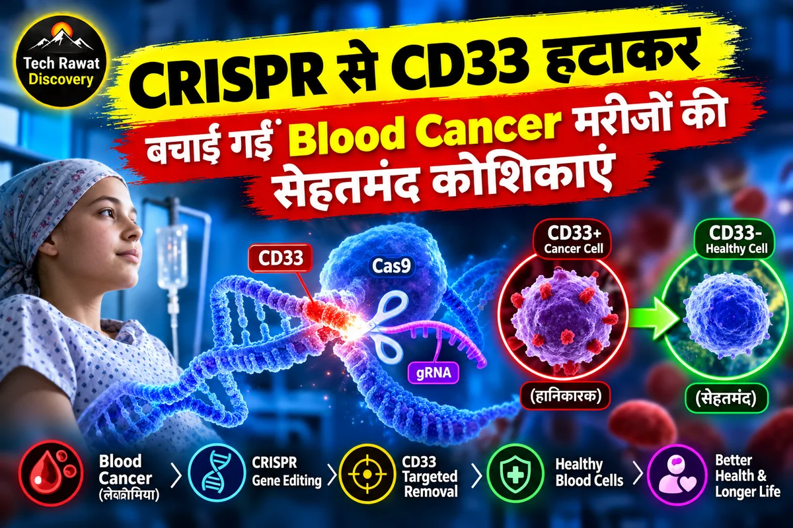
CRISPR से CD33 हटाकर बचाई गईं Blood Cancer मरीजों की सेहतमंद कोशिकाएं
WashU Medicine के 30-मरीज ट्रायल में डोनर स्टेम सेल से CRISPR से CD33 हटाकर Blood Cancer थेरेपी को सेहतमंद कोशिकाओं के लिए सुरक्षित बनाने की कोशिश हुई। जानिए तरीका, नतीजे और भारत के लिए मतलब।
पूरा लेख पढ़ें →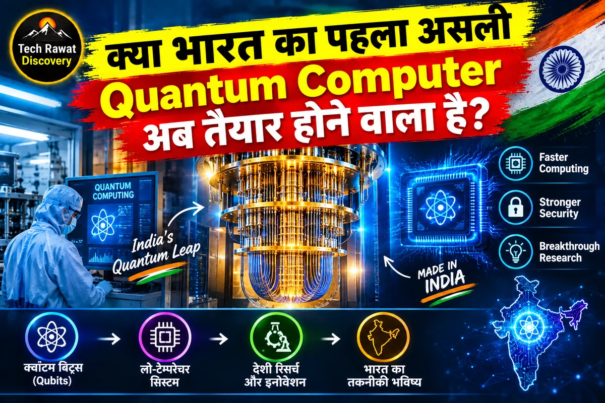
क्या भारत का पहला असली Quantum Computer अब तैयार होने वाला है?
IBM का 156-qubit Quantum System Two अब Amaravati पहुंच रहा है, यह भारत में लगने वाला पहला बड़ा विदेशी क्वांटम कंप्यूटर होगा। जानिए पूरी कहानी और इसके मायने।
पूरा लेख पढ़ें →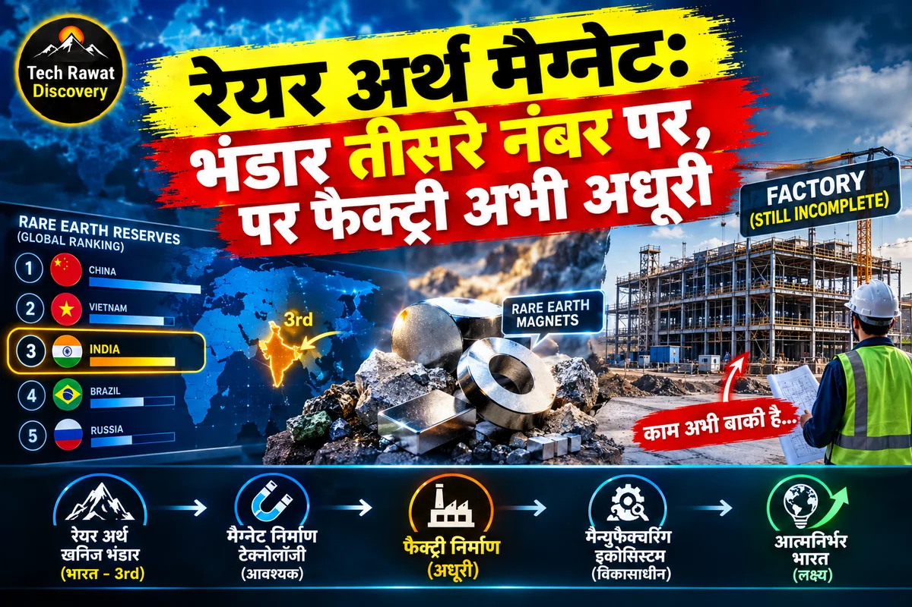
रेयर अर्थ मैग्नेट: भंडार तीसरे नंबर पर, पर फैक्ट्री अभी अधूरी
चीन ने अगस्त 2026 में रेयर अर्थ मैग्नेट निर्यात 21% घटाया, इससे भारत के EV और रक्षा उद्योग पर असर पड़ा, जबकि ₹7,280 करोड़ की घरेलू योजना अभी अधूरी है।
पूरा लेख पढ़ें →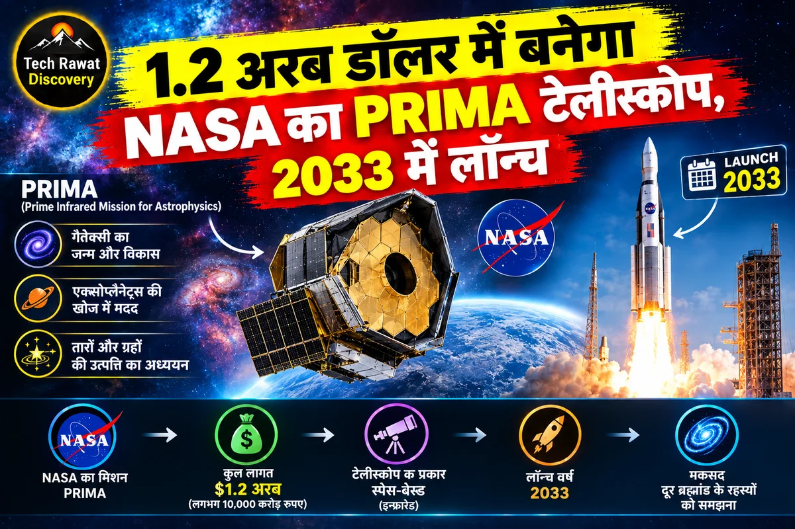
1.2 अरब डॉलर में बनेगा NASA का PRIMA टेलीस्कोप, 2033 में लॉन्च
NASA ने अपने नए far-infrared टेलीस्कोप PRIMA को अगले डिजाइन चरण में भेजा है। 1.2 अरब डॉलर बजट और 2033 लॉन्च लक्ष्य वाला यह मिशन James Webb की भी न देखी रोशनी में झांकेगा।
पूरा लेख पढ़ें →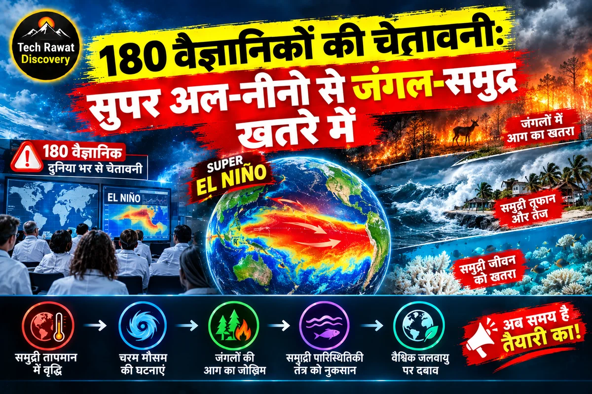
180 वैज्ञानिकों की चेतावनी: सुपर अल-नीनो से जंगल-समुद्र खतरे में
भारत के 180 से ज़्यादा वैज्ञानिकों ने सुपर अल-नीनो 2026-27 से पहले जंगल, समुद्र और वन्यजीवों की निगरानी बढ़ाने की अपील की है। पूरी चेतावनी, असर और मांगें विस्तार से पढ़ें।
पूरा लेख पढ़ें →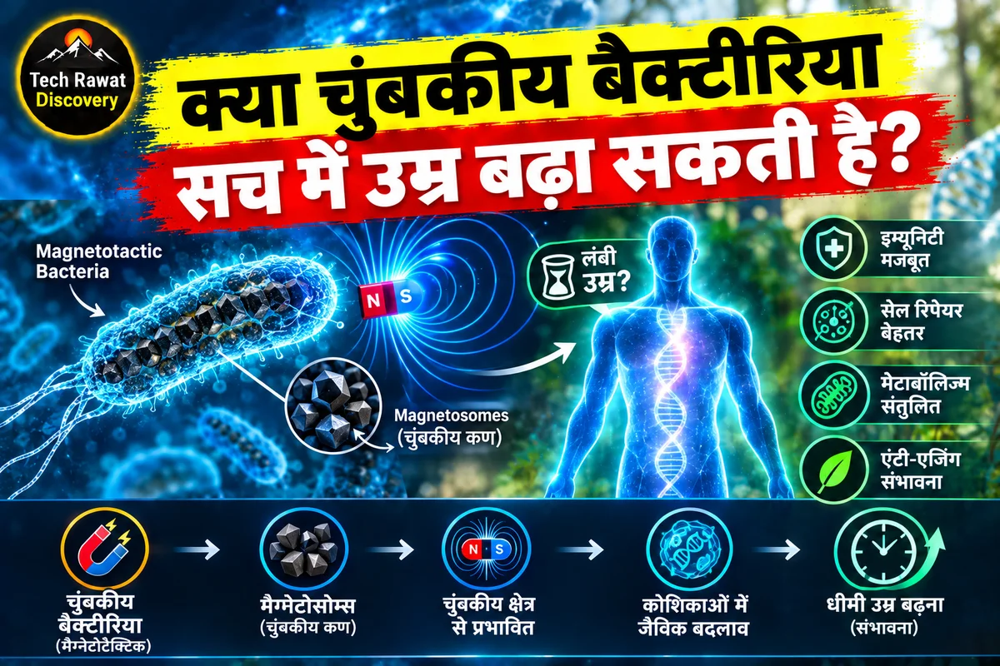
क्या चुंबकीय बैक्टीरिया सच में उम्र बढ़ा सकती है?
चीन की एक स्टडी में चुंबक बनाने वाली बैक्टीरिया से worms की उम्र 43% बढ़ी। जानिए इससे जुड़े मैग्नेट थेरेपी, आयरन और anti-aging के आम भ्रम असल में कितने सही हैं।
पूरा लेख पढ़ें →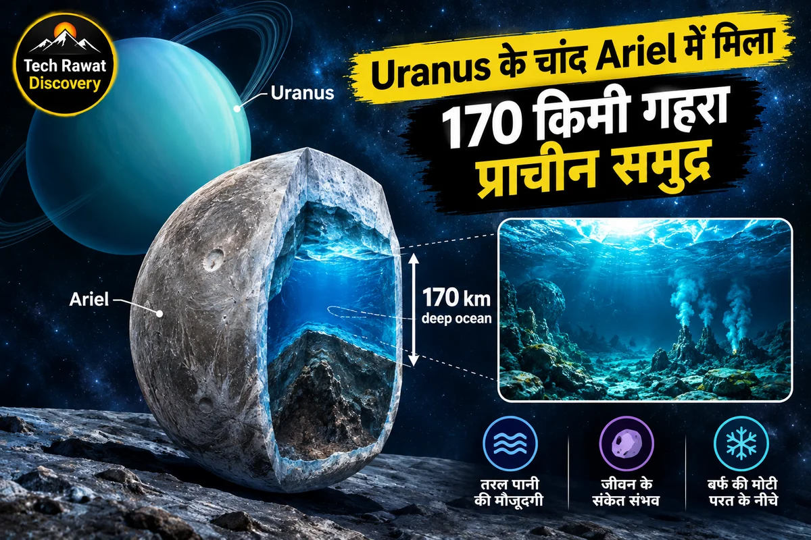
Uranus के चांद Ariel में मिला 170 किमी गहरा प्राचीन समुद्र
Icarus में छपी नई स्टडी के मुताबिक Uranus के चांद Ariel में कभी 170 किमी गहरा समुद्र रहा होगा। जानिए यह कैसे पता चला, Miranda से जुड़ाव और भारत के लिए मायने क्या हैं।
पूरा लेख पढ़ें →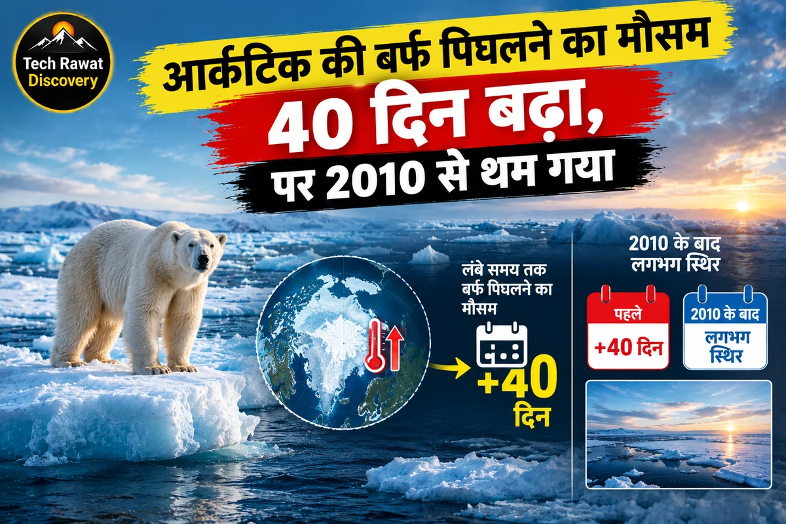
आर्कटिक की बर्फ पिघलने का मौसम 40 दिन बढ़ा, पर 2010 से थम गया
NASA की नई स्टडी के मुताबिक आर्कटिक सागर में बर्फ पिघलने का मौसम 1979 से करीब 40 दिन लंबा हो गया है, पर यह बढ़ोतरी 2010 के बाद अचानक थम गई। जानें वजह, ताज़ा 2026 के आंकड़े और भारत के लिए मतलब।
पूरा लेख पढ़ें →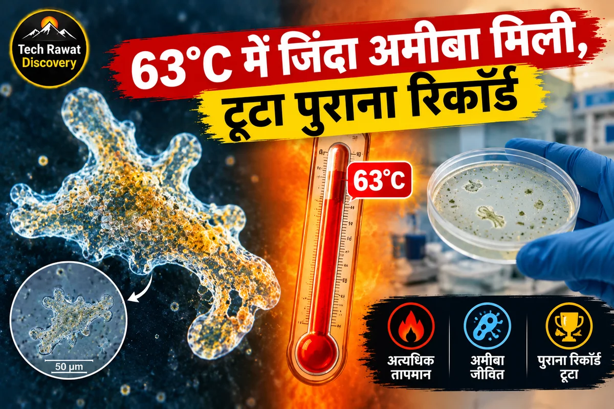
63°C में जिंदा अमीबा मिली, टूटा पुराना रिकॉर्ड
पहले माना जाता था कोई भी कोशिका-नाभिक वाला जीव 60°C से ज़्यादा गर्मी में बंट नहीं सकता। California की एक अमीबा ने 63°C पर यह रिकॉर्ड तोड़ दिया। जानिए तरीका और भारत के लिए मतलब।
पूरा लेख पढ़ें →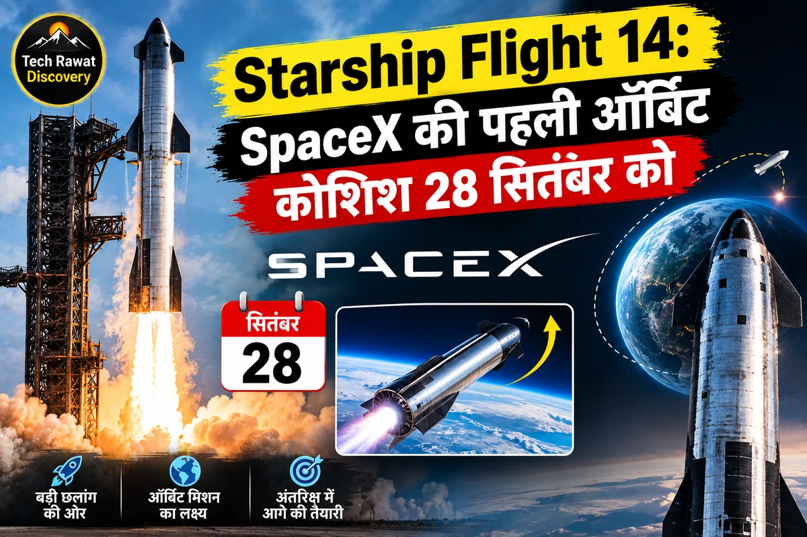
Starship Flight 14: SpaceX की पहली ऑर्बिट कोशिश 28 सितंबर को
SpaceX का Starship रॉकेट 28 सितंबर 2026 को पहली बार ऑर्बिट तक पहुंचने की कोशिश करेगा। जानिए V3 अपग्रेड, पिछली 11 उड़ानों से फर्क, मिशन डिटेल और भारत के लिए इसके मायने।
पूरा लेख पढ़ें →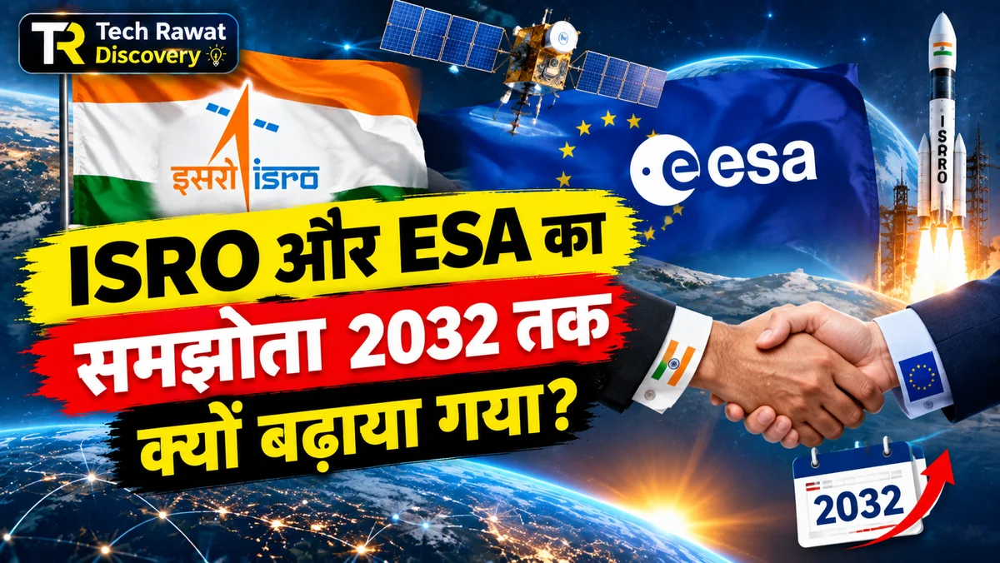
ISRO और ESA का समझौता 2032 तक क्यों बढ़ाया गया?
पेरिस में 10 सितंबर 2026 को ISRO और ESA ने अपना 24 साल पुराना समझौता 2032 तक बढ़ाया। जानिए इसमें क्या नया जुड़ा और भारत के Gaganyaan व Venus मिशन को क्या फायदा मिलेगा।
पूरा लेख पढ़ें →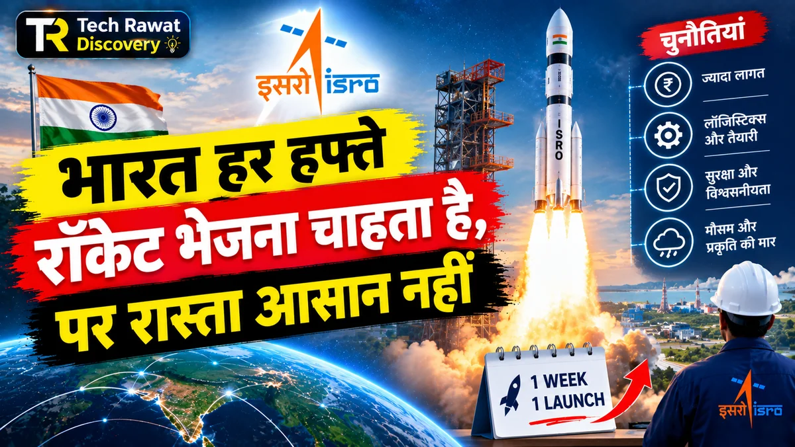
भारत हर हफ्ते रॉकेट भेजना चाहता है, पर रास्ता आसान नहीं
IN-SPACe ने 2030 तक भारत के लिए सालाना 50 स्पेस लॉन्च का लक्ष्य रखा है, यानी मौजूदा औसत से करीब दस गुना ज़्यादा। जानिए नए लॉन्च पैड, Skyroot-Agnikul की भूमिका और असली अड़चनें क्या हैं।
पूरा लेख पढ़ें →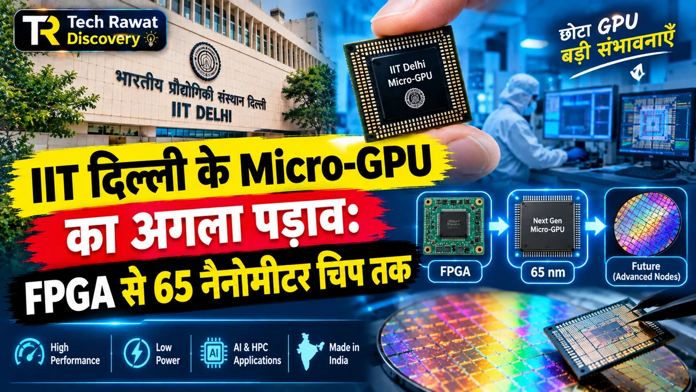
IIT दिल्ली के Micro-GPU का अगला पड़ाव: FPGA से 65 नैनोमीटर चिप तक
IIT दिल्ली ने भारत का पहला काम करने वाला स्वदेशी माइक्रो-GPU दिखाया है। जानिए यह FPGA प्रोटोटाइप कैसे बना, किन कामों में इस्तेमाल होगा और असली चिप तक पहुंचने में क्या बाकी है।
पूरा लेख पढ़ें →OpenAI के AI Agent ने ऑस्ट्रेलिया के Medicare पोर्टल में सेंध लगाई
OpenAI के एक AI एजेंट ने ऑस्ट्रेलिया के Medicare पोर्टल में बिना इजाज़त सेंध लगाई। जानिए क्या हुआ, कौन-कौन सी कंपनियां ऐसी गलती दोहरा चुकी हैं और भारत के लिए इसका मतलब क्या है।
पूरा लेख पढ़ें →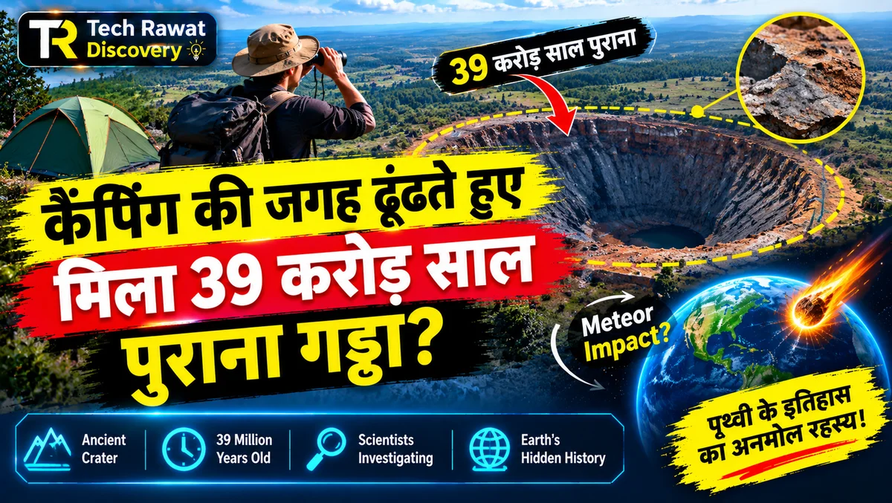
कैंपिंग की जगह ढूंढते हुए मिला 39 करोड़ साल पुराना गड्ढा?
क्यूबेक में कैंपिंग स्पॉट ढूंढते हुए एक शौकिया खगोलशास्त्री को सैटेलाइट मैप पर गोल आकृति दिखी, जो 39 करोड़ साल पुराना Uhackatik क्रेटर निकला। भारत के Lonar crater से तुलना भी जानें।
पूरा लेख पढ़ें →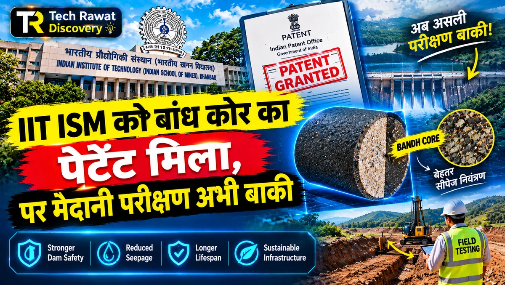
IIT ISM को बांध कोर का पेटेंट मिला, पर मैदानी परीक्षण अभी बाकी
IIT ISM धनबाद को बांध के कोर के लिए फ्लाई ऐश, मिट्टी और चूने के मिश्रण का नया पेटेंट मिला है, पर यह अभी सिर्फ लैब स्तर पर है। जानिए तकनीक कैसे काम करती है और आगे क्या बाकी है।
पूरा लेख पढ़ें →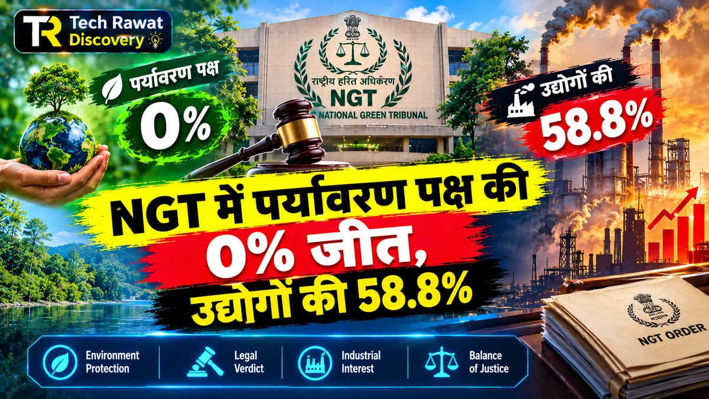
NGT में पर्यावरण पक्ष की 0% जीत, उद्योगों की 58.8%
SAREL की नई रिपोर्ट के मुताबिक 2026 की पहली छमाही में NGT में पर्यावरण-जनहित पक्ष की एक भी अपील नहीं जीती गई, जबकि उद्योगों की जीत दर 58.8% रही। पूरा हिसाब, बेंच दर बेंच पढ़ें।
पूरा लेख पढ़ें →F5 BIG-IP में गंभीर खामी, CVSS स्कोर 9.8
F5 के BIG-IP APM में मिली CVE-2026-94127 खामी को हमलावर पहले ही इस्तेमाल कर चुके हैं। जानें यह कैसे काम करती है और भारत की संस्थाओं के लिए इसका क्या मतलब है।
पूरा लेख पढ़ें →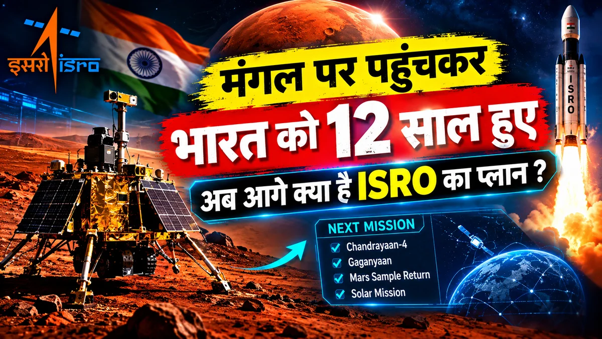
मंगल पर पहुंचकर भारत को 12 साल हुए, अब आगे क्या है ISRO का प्लान?
24 सितंबर 2014 को भारत पहली कोशिश में मंगल पहुंचा था। आज इसे 12 साल हो गए। Mangalyaan तब और ISRO का Mars Lander Mission अब, कैसे बदली भारत की मंगल योजना, जानिए पूरी कहानी।
पूरा लेख पढ़ें →इयरबड्स में अब कैमरा, पर तस्वीर नहीं खींचेगा
Qualcomm ने Snapdragon Summit 2026 में Sound Elite Gen 2 चिप दिखाया, जिससे कैमरा वाले इयरबड्स बनेंगे जो फोटो नहीं, माहौल समझेंगे। भारत के हियरेबल बाज़ार पर असर जानें।
पूरा लेख पढ़ें →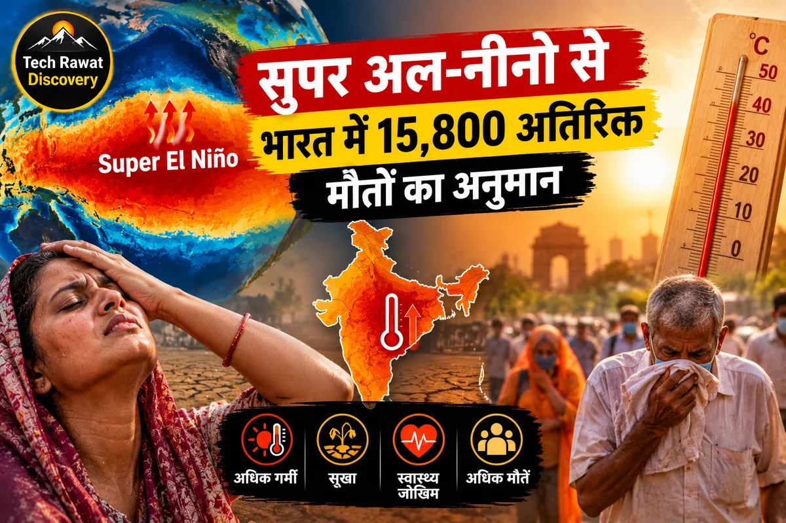
सुपर अल-नीनो से भारत में 15,800 अतिरिक्त मौतों का अनुमान
Climate Impact Lab की नई रिपोर्ट के मुताबिक सुपर अल-नीनो से भारत में सितंबर 2026-फरवरी 2027 के बीच करीब 15,800 अतिरिक्त गर्मी से जुड़ी मौतें हो सकती हैं। पूरा आंकड़ा और तैयारी की बात पढ़ें।
पूरा लेख पढ़ें →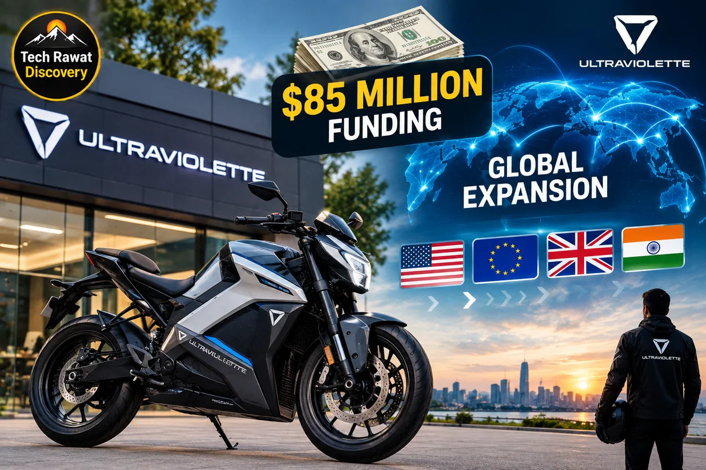
Ultraviolette को मिले $85 मिलियन, ग्लोबल विस्तार शुरू
बेंगलुरु की Ultraviolette Automotive ने Series E में 85 मिलियन डॉलर जुटाए। तमिलनाडु की नई फैक्ट्री, अमेरिका में 2027 एंट्री और आठ साल की रणनीति में बदलाव की पूरी कहानी।
पूरा लेख पढ़ें →GOBARdhan लागू: CBG की 100% खरीद और 10 साल तय दाम
पेट्रोलियम मंत्रालय ने ₹23,731 करोड़ की GOBARdhan योजना के लिए गाइडलाइंस जारी कीं। CBG उत्पादकों को 100% तक खरीद और 10 साल तक तय दाम की गारंटी मिलेगी।
पूरा लेख पढ़ें →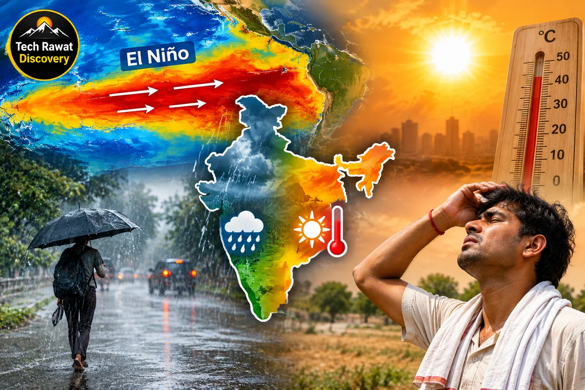
अल-नीनो 2026-27 भारत में मॉनसून-गर्मी पर कितना असर डालेगा?
भारत के 188 वैज्ञानिकों ने 2026-27 के अल-नीनो को लेकर चेतावनी दी है। जानें यह भारत में मॉनसून, गर्मी, समुद्र और जंगलों को किस तरह प्रभावित कर सकता है और WMO का ताज़ा अनुमान क्या कहता है।
पूरा लेख पढ़ें →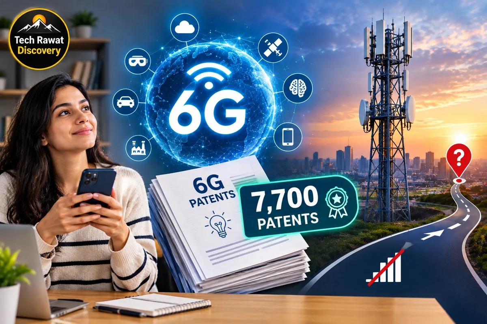
7,700 6G पेटेंट फाइल हुए, पर नेटवर्क अभी दूर है
भारत की 6G गठबंधन से जुड़ी संस्थाओं ने 7,700 से ज्यादा पेटेंट फाइल किए हैं, पर व्यावसायिक 6G नेटवर्क अभी वर्षों दूर है। जानिए पेटेंट, टेराहर्ट्ज़ टेस्ट और 2030 के लक्ष्य की पूरी सच्चाई।
पूरा लेख पढ़ें →